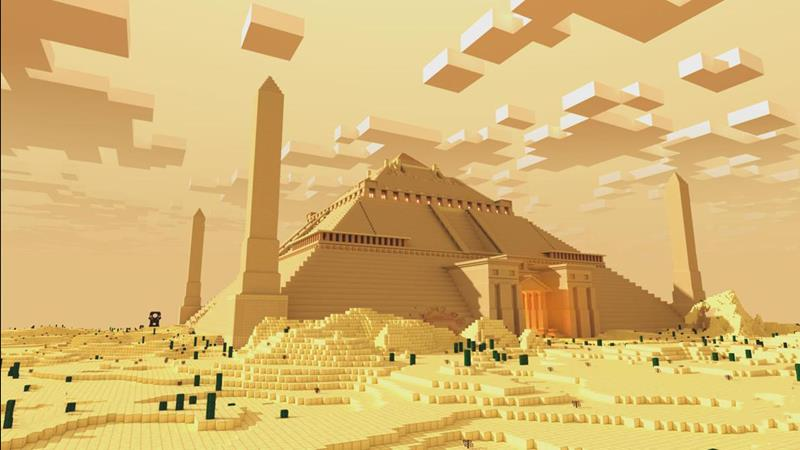

Tarefas Favoritas
A tarefa que eu mais gostei foi a que tinhamos que reproduzir algum monumento do mundo real, no Minecraft, e deixar claro a escala de proporção que utilizamos. Infelizmente, não tenho mais acesso ao Teams dos anos anteriores, então não conseguirei colocar uma representação da tarefa. Eu escolhi fazer a pirâmide do Egito
